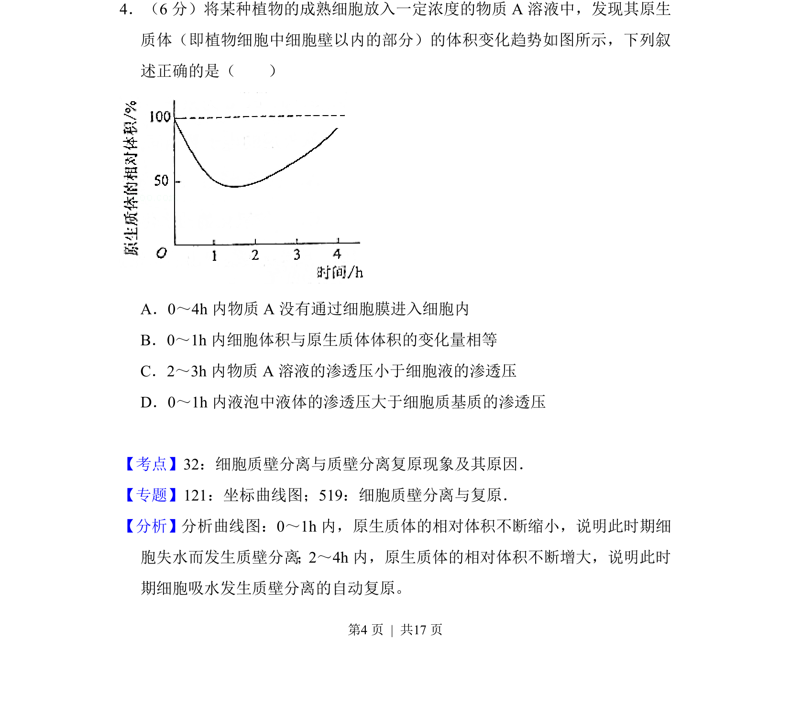
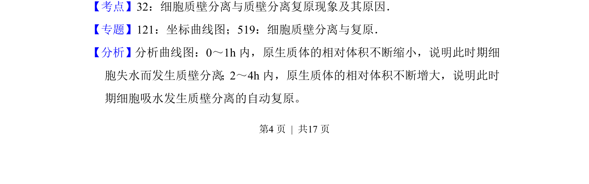
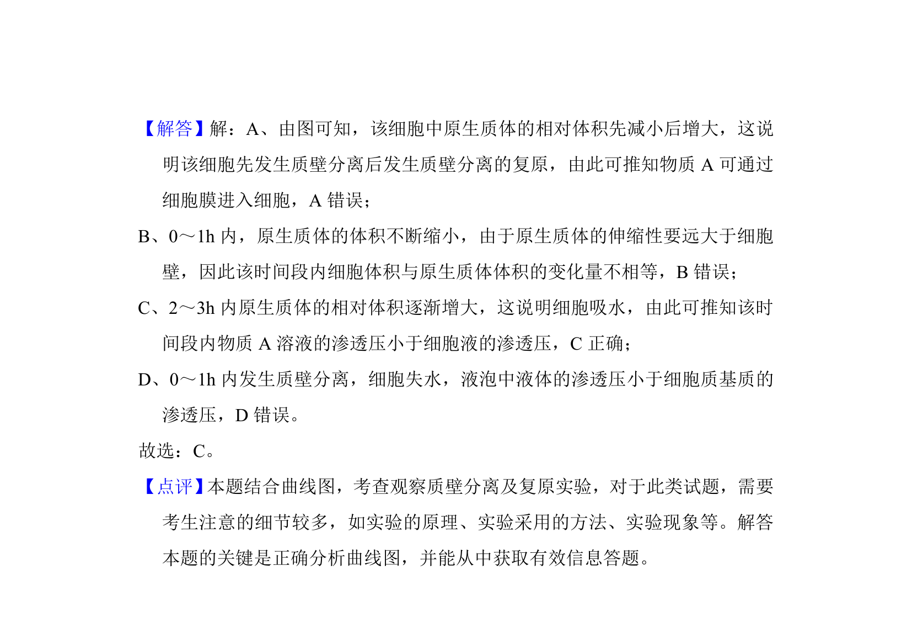

考点：质壁分离 渗透压 细胞液

植物细胞在不同渗透压溶液中发生质壁分离及复原的过程分析


📄 原 PDF 第 4 页：
素材/真题/吉林/2008-2024·（吉林）生物高考真题/2017年高考生物试卷（新课标Ⅱ）（解析卷）.pdf
4．（6分）将某种植物的成熟细胞放入一定浓度的物质A溶液中，发现其原生 质体（即植物细胞中细胞壁以内的部分）的体积变化趋势如图所示，下列叙 述正确的是（ ） A．0～4h内物质A没有通过细胞膜进入细胞内 B．0～1h内细胞体积与原生质体体积的变化量相等 C．2～3h内物质A溶液的渗透压小于细胞液的渗透压 D．0～1h内液泡中液体的渗透压大于细胞质基质的渗透压
【考点】32：细胞质壁分离与质壁分离复原现象及其原因．菁优网版权所有 【专题】121：坐标曲线图；519：细胞质壁分离与复原． 【分析】分析曲线图：0～1h内，原生质体的相对体积不断缩小，说明此时期细 胞失水而发生质壁分离；2～4h内，原生质体的相对体积不断增大，说明此时 期细胞吸水发生质壁分离的自动复原。